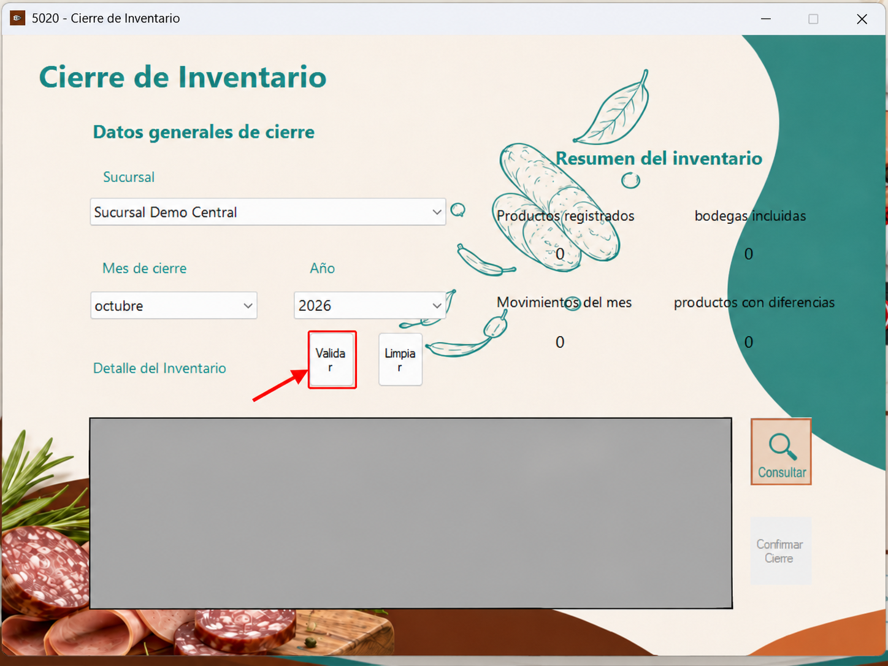
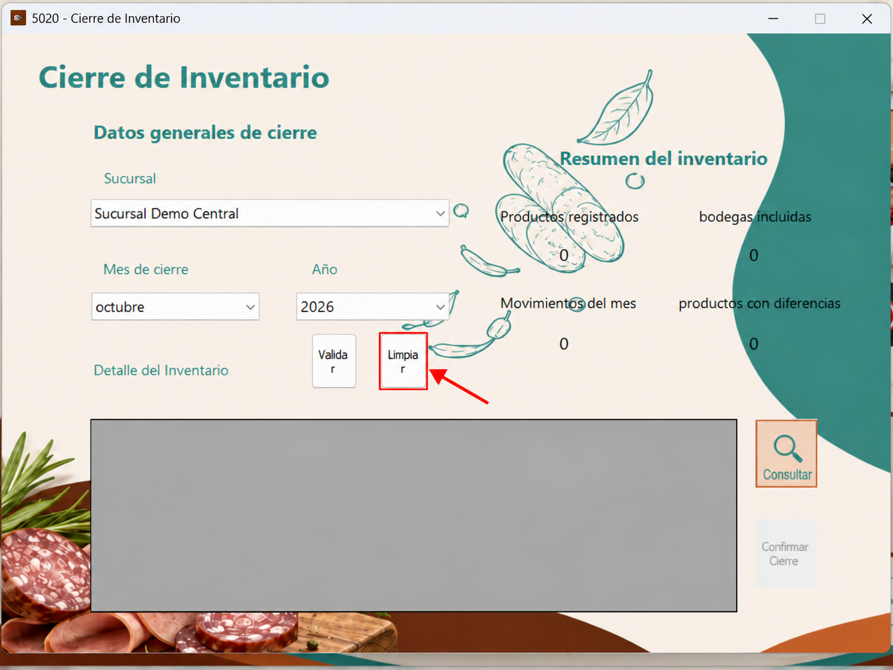
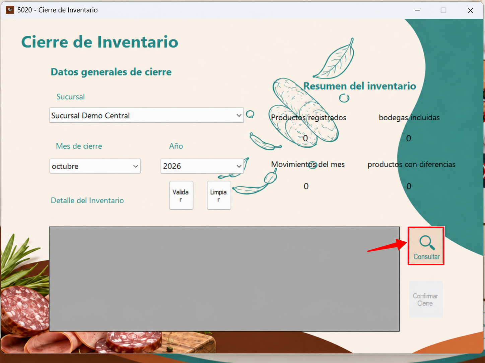
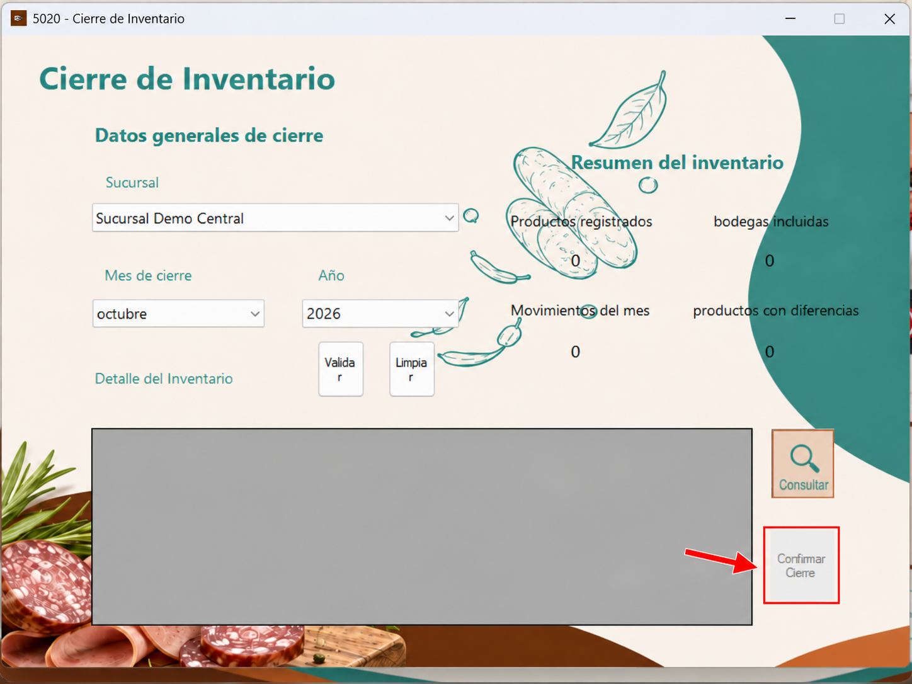
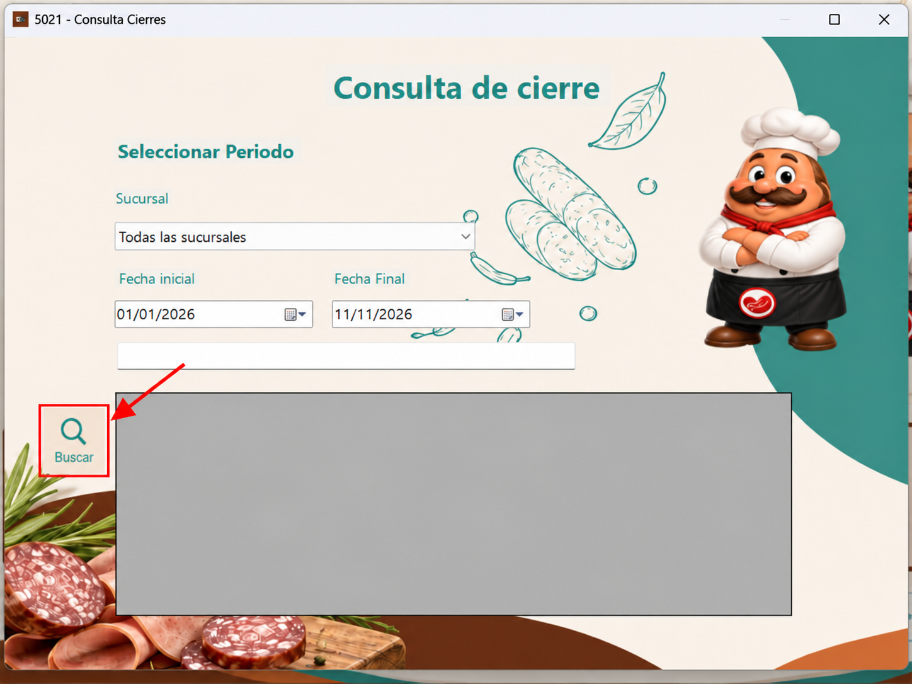

Este formulario permite seleccionar la sucursal y el período de cierre, validar la información del inventario y aplicar el cierre cuando los datos sean correctos.
En el campo “Sucursal”, seleccione la sucursal para la que desea realizar el cierre de inventario.
En los campos “Mes de cierre” y “Año”, seleccione el período que corresponde al cierre que desea procesar.
El botón “Validar” comprueba que la información del inventario esté correcta, que los valores cuadren y que no existan diferencias antes de aplicar el cierre.

El botón “Limpiar” elimina la información ingresada en el formulario para permitir una nueva selección de sucursal y período.

El botón “Consultar” abre la ventana secundaria “Consulta de Cierres”, desde la cual se pueden buscar cierres registrados por sucursal y por rango de fechas.

El botón “Confirmar Cierre” aplica el cierre de inventario del período seleccionado. Esta opción debe utilizarse únicamente después de validar que toda la información esté correcta y no existan diferencias.

Este formulario permite consultar los cierres de inventario registrados, utilizando una sucursal específica o todas las sucursales, junto con un rango de fechas.
En el campo “Sucursal”, puede seleccionar una sucursal específica o la opción “Todas las sucursales”.
En los campos “Fecha inicial” y “Fecha final”, indique el rango de fechas que desea consultar.
El botón “Buscar” realiza la consulta de cierres según los criterios seleccionados y muestra los resultados en el área inferior del formulario.
